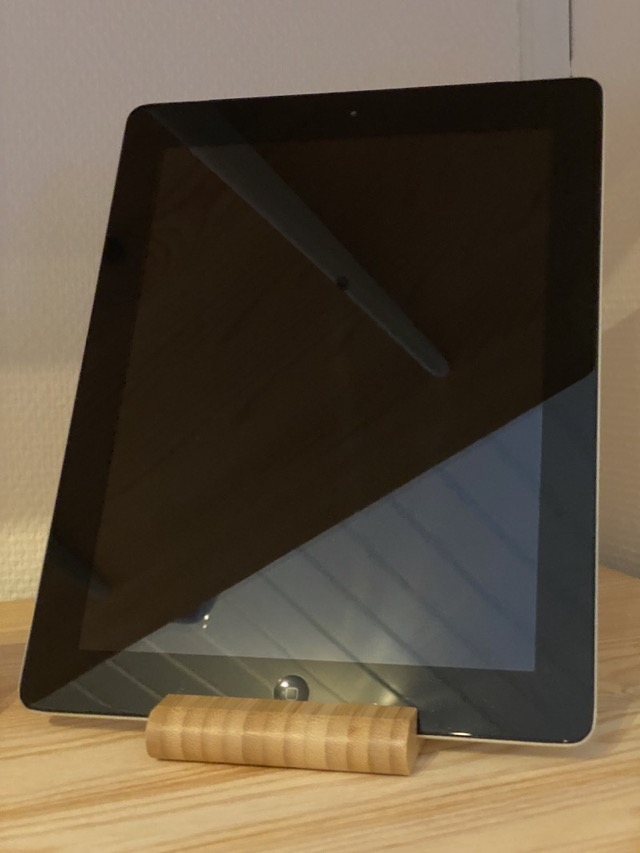

Macseum - Mortens Apple-museum

iPad 2 (2011)
Den første iPad jeg ejede. Meget tyndere end sin forgænger.
Apple A5 SoC
1 GHz processor
512 MB ram
16 GB harddisk
9,7" LCD-skærm
Vægt: 600 g
Læs mere på Wikipedia
Fortsæt turen
Kig til venstre
Kig op
Kig ned
Kig til højre
Follow @mortengregersen